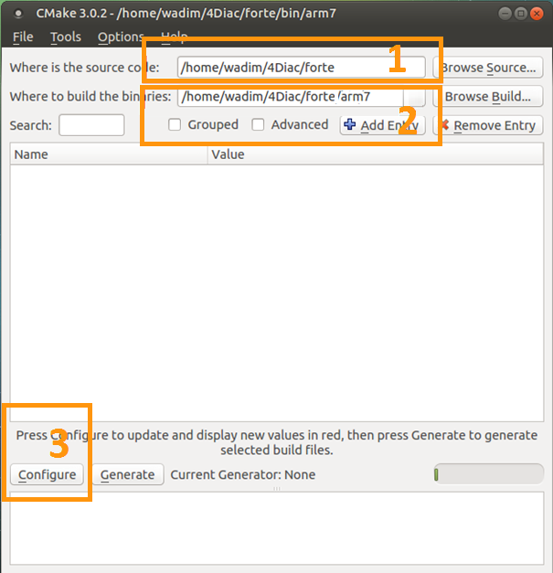
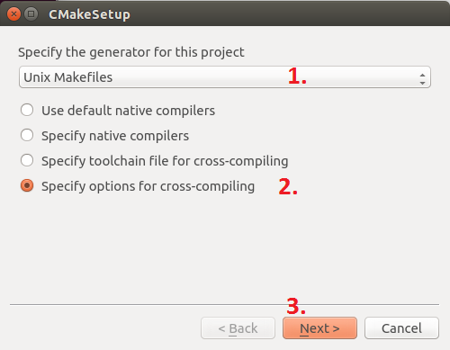
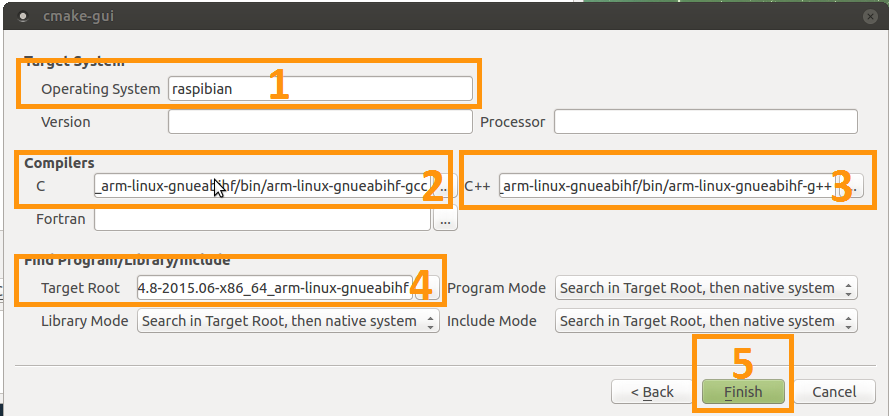
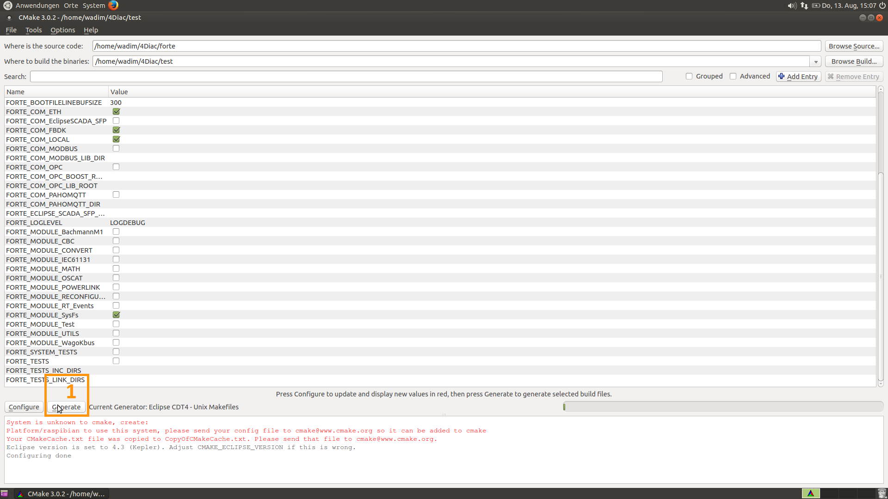

Introduction
This guide is for compiling FORTE for the Raspberry Pi. For information about the parameters to be used, go to the Parameters page
Raspberry Pi (RPI) is one of most famous low-cost embedded system. In its third generation, the Raspberry Pi 3 launched in February 2016
has a 1.2GHz 64-bit quad-core ARMv8 CPU, 1 GB RAM and several I/O options, among them a 40 pin header. The operating system is loaded from a SD card, so it can support many
OS, being the most popular the Debian-based Raspbian. FORTE used to use the wiringPi library, but it has changed to use the sysFs virtual file system.
This tutorial explains first how to compile FORTE in the RPI, or even cross-compile, and how to easily use the I/O Function Blocks in FORTE to control the 40 pin
header.
Getting the RPI ready
This tutorial doesn't show the details of how to make the RPI run, but if you never used before, you should know that beside the RPI board, you need a source power that is
connected to the mini-USB port and a mini-SD card. The RPI can be connected to a screen, mouse and keyboard through the HDMI and USB ports, but you also can connect to it headless,
meaning that you connect through ssh using the Ethernet or a usb-wifi connector. There are plenty of tutorials on how to access the RPI, so this tutorial starts supposing you have access
to the command line of the RPI, through ssh or directly on it using the GUI, and that the RPI has Internet access.
Building FORTE on the RPI
Preparation
- Install the additional software needed on your RPI.
- Git. FORTE is stored as a git repository in the elipse server.
- The building tools: cmake, make, gcc, g++
$ sudo apt-get install git cmake make gcc g++
Building
- Check out FORTE from the git repository in your home directory.
$ cd ~
$ git clone https://git.eclipse.org/r/4diac/org.eclipse.4diac.forte
- Prepare the FORTE project structure for the Posix architecture.
$ cd org.eclipse.4diac.forte
$ chmod +x setup_posix.sh
You will need to add the SysFs module to the compilation. In order to that, you will need to change the setup_posix.sh file, using your preferred text editor.
In the file you will find a line that starts with cmake -G "Unix Makefiles" -DFORTE_ARCHITECTURE=Posix. At the end of the line, add
-DFORTE_MODULE_SysFs=ON. This will enable the interface to the 40 pin header of the RPI. Save the file, exit the editor and execute:
$ ./setup_posix.sh
When no error occurs, the command creates a folder in bin/posix where all the files to compile FORTE are stored. Access the folder if not already there.
- Execute "make", which will start the compilation.
$ make
Cross compiling to the RPI
The RPI is a very powerful computer, but when developing a project, one sometimes has to compile FORTE many times, an the RPI is slow compared to the power of a desktop computer.
That's when cross-compiling is useful. It allows to compile in your desktop machine, and then send the executable to the RPI.
You will need the FORTE source code, and the same additional tools used in the preparation, except the CMake, because the CMake-GUI will be needed in this case.
Cross-compiling using Linux
- Install needed additional tools:
- CMake-GUI
$ sudo apt-get install cmake-qt-gui
- Linaro Cross-compiling Toolchain. You can download it from this link.
Then, you should de-compress this file
$ tar -xvf gcc-linaro-4.8-2015.06-x86_64_arm-linux-gnueabihf.tar.xz
You could avoid downloading and de-compressing the file using the command
$ sudo apt-get install gcc-arm-linux-gnueabihf g++-arm-linux-gnueabihf
but this method gave some errors in some cases.
- Open CMake-GUI and complete as the image
- Set the FORTE source path where you cloned the git repository.
- Set path for binaries where you want to create the executable. Normally is used bin/raspPi
- Press Configure

- CMake Setup
- Select the tool you normally use to compile your programs. This example follows using UNIX Makefiles from the list.
- Select Specify tools for cross-compiling
- Press Next

- CMake Setup
- Write a name for the OS (normally raspbian, it won't affect the compilation).
- Select the path to the C cross-compiler called arm-linux-gnueabihf-gcc, in the bin folder of the downloaded tools' folder. If not found, you could execute:
$ which arm-linux-gnueabi-gcc
- Select the path to the C++ cross-compiler called arm-linux-gnueabihf-g++, in the bin folder of the downloaded tools' folder. If not found, you could execute:
$ which arm-linux-gnueabi-g++
- The target root field can be left empty.
- Click Finish

- Configure the compilation
A list with all variables of FORTE in red should be shown in CMake as the picture below.
- Choose you Eclipse version if you selected it in step 3.1. Otherwise, it can be left as it is.
- Set the FORTE_ARCHITECTURE variable to Posix
- Enable FORTE_MODULE_SysFs and all other modules that you want
- Click Configure and the variables that need revision will apear again in red and the rest in white. Check the variables and press Configure until no red variable is shown.

- Generate files
- Click Generate

- Build forte
- Go to the recently generated folder and execute make (or build it as you normally do)
$ cd bin/raspPi
$ make
Cross-compiling using Windows
- Install needed additional tools:
- CMake from its download page
- Cross-compiling tool. You can download it from this link.
- Follow instructions of cross-compiling in the Linux platform from step 2, taking in account the following:
- In steps 4.2 and 4.3, the C and C++ cross-compilers are in the bin folder where you installed the tool, normally C:\SysGCC\Raspberry\bin
Where to go from here?
Now that you installed the required tools, it's time to start using them. Take a look at the following page:
Step by step tutorial
If you want to compile FORTE for another platform or want to know more about that, here's a quick link back:
Install 4DIAC
If you want to go back to the Start Here page, we leave you here a fast access
Start Here page
Or Go to top